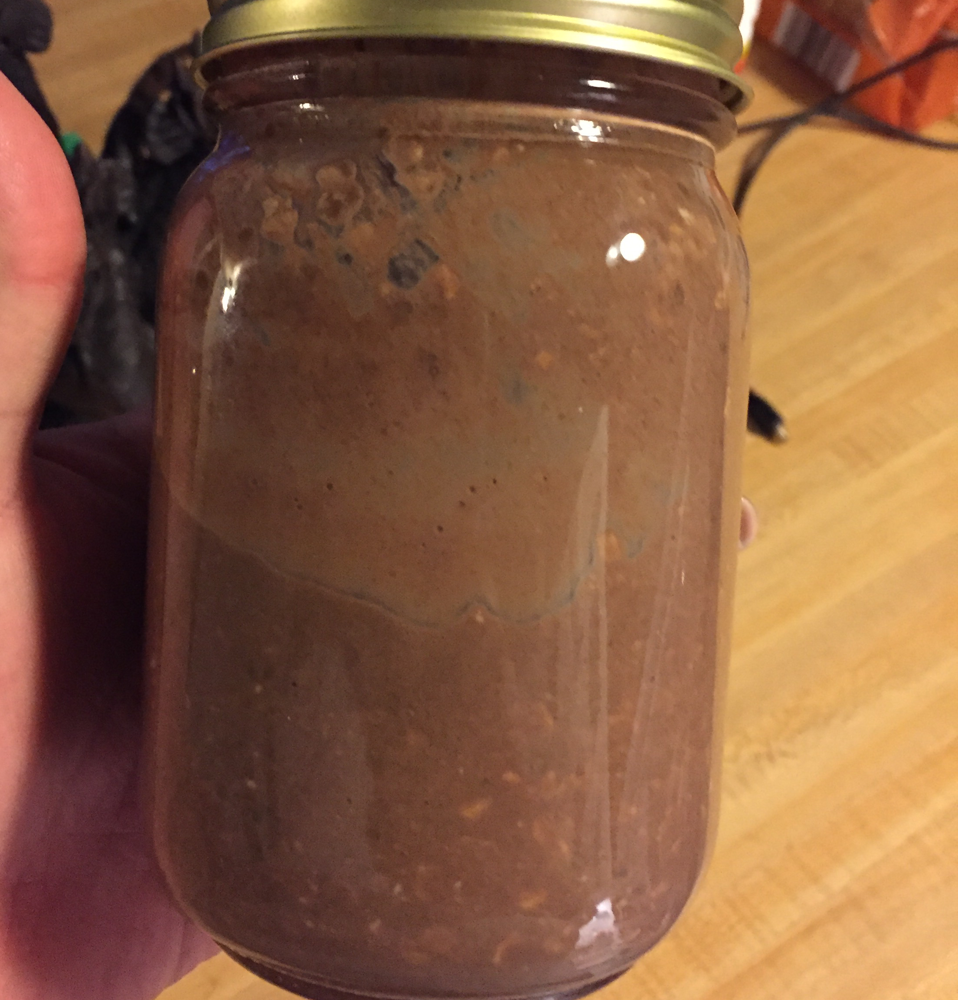

Chocolate Coconut Overnight Oats

Description
A yummy breakfast that is helathy but doesn't leave you feeling deprived, this no-cook
oatmeal will be creamy by the morning time and makes breakfast prep time non-existent.
Put all ingredients in a 12-ounce mason jar and vigorously shake to make preparation a
breeze!
Ingredients
- 1 cup chocolate-flavored almond milk
- 3/4 cup old-fashioned rolled oats (such as Quaker)
- 1 tablespoon chia seeds
- 1 tablespoon packed shredded sweetened coconut
- 1 tablespoon maple syrup
- 1 tablespoon unsweetened cocoa powder
- 1 splash vanilla extract
Steps
- Mix almond milk, oats, chia seeds, coconut, maple syrup, cocoa powder, and vanilla
extract in a 12-ounce mason jar. Cover and refrigerate, 8 hours to overnight. Stir
and serve cold.